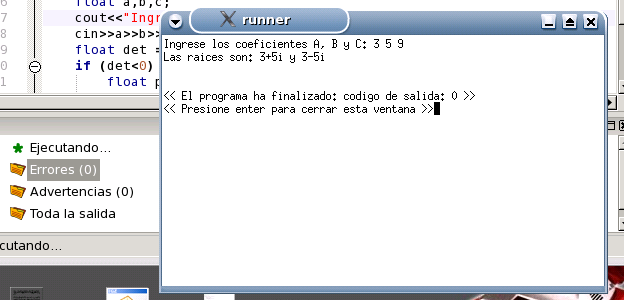

Presione nuevamente F9 para correr el programa. Esta vez se compilará y ejecutará correctamente en una nueva ventana. Luego de finalizar la ejecución, ZinjaI informará el código de retorno de su programa (el 0 de la línea final "return 0" si se ejecutó correctamente) y esperará a que presione enter una vez más antes de cerrar la ventana, para permitirle observar los resultados.

Nota: Puede alterar este comportamiento desde el cuadro Diálogo Opciones de Compilación y Ejecución.
Volver... Siguiente Tutorial...